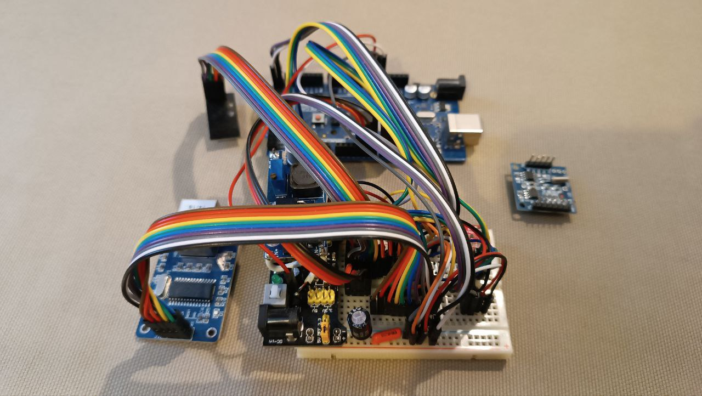
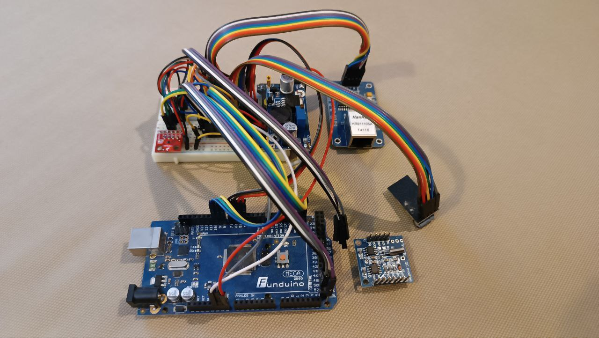
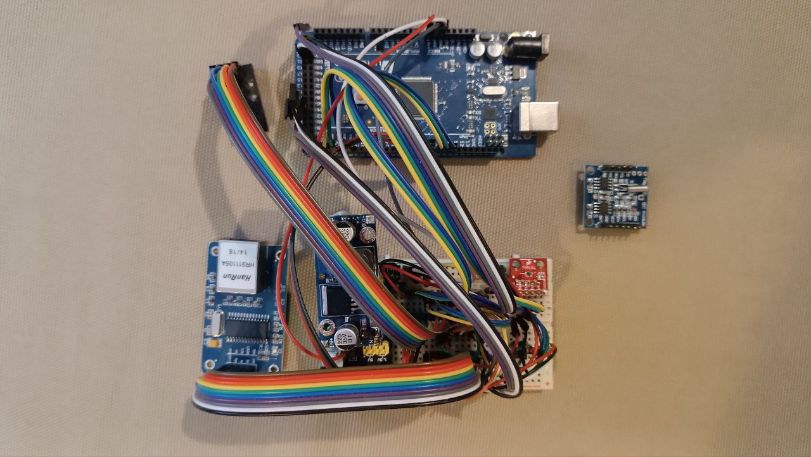

RMAP e Stima
RFC rmap versione 3.3
Stima obsolete
Stima V0
Alcune foto della stazione
Stima V1
Stima V2
Stima base
Stima V3
Stima V4
Stima WiFi
Server RMAP
Videotutorial
Dispense
RMAP e Stima
»
Stima obsolete
»
Stima V0
View page source
Stima V0
¶
Questa è la prima versione della stazione Stima basata su breadboard e non più supportata.
Alcune foto della stazione
¶
  